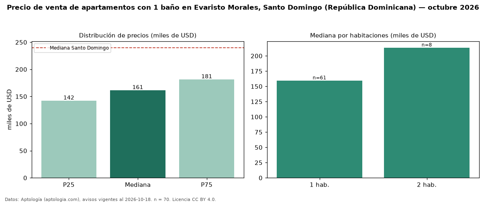

Precio de venta de apartamentos con 1 baño en Evaristo Morales, Santo Domingo (República Dominicana) — octubre 2026
USD 161.250 es el precio mediano de apartamentos con 1 baño en venta en Evaristo Morales, Santo Domingo (República Dominicana) (n = 70 avisos). Frente a la mediana de todos los apartamentos en venta de Evaristo Morales (USD 227.000, n = 370), queda 29 % por debajo; este segmento reúne el 19 % de esos avisos. Por metro cuadrado, la mediana es USD 2.460/m² (n = 67), 30 % por encima del conjunto de referencia (USD 1.896/m²). El área mediana anunciada es 64 m². El segmento con más oferta es el de 1 habitación (61 avisos, mediana USD 159.600); pasar de 1 habitación a 2 habitaciones cambia la mediana +34 %. La mediana de todos los apartamentos en venta de Santo Domingo es USD 240.000 (−33 % de diferencia). La mitad central de los avisos va de USD 142.000 a USD 181.155 (razón 1,3), una dispersión baja. Datos: Aptología (aptologia.com), CC BY 4.0 — https://www.aptologia.com/do/venta/santo-domingo/evaristo-morales. Archivos: PDF, CSV con las cifras y gráfica PNG.

| Avisos únicos | 70 |
|---|---|
| Percentil 25 | COP 142.000 |
| Mediana | COP 161.250 |
| Percentil 75 | COP 181.155 |
| Mediana por m² | COP 2.460 |
Fuente: avisos vigentes de portales inmobiliarios recopilados por Aptología, deduplicados (mínimo 30 avisos únicos por celda). Precios pedidos, no cerrados. Fecha: 2026-10-18.